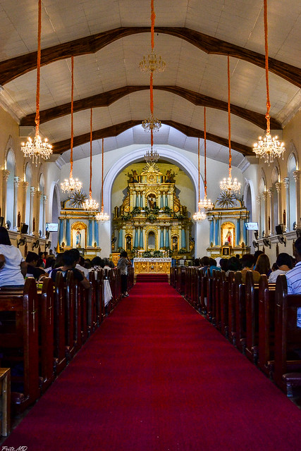
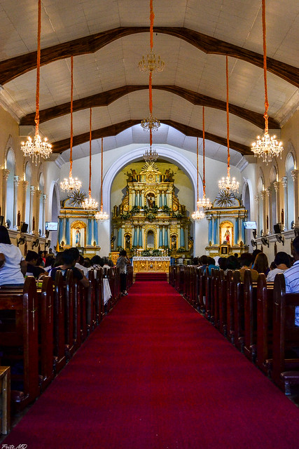

BADOC ISLAND
Badoc Island is one of the few attractions that are still uncommercialized. Once you get there, expect that it’ll be quite bare. There are no establishments, only the transfer boats and small nipa hut-like setups where you can safely place your belongings while on the island.

LA-VIRGEN CHAPEL
The la Virgen Milagrosa Badoc houses the Sanctuary of the Miraculous Statue of the Blessed Virgin Mary, the La Virgen Milagrosa. History traces the life-sized statue to Nagasaki, Japan. It was sent floating in the sea by missionaries operating in secret in Japan (for fear of persecution during the Tokugawa Regime), along with the Miraculous Statue of the Black Nazarene (Sinait Santo Cristo Milagroso). It was first found by local fishermen in the shores of Barangay Dadalaquiten, on the boundary between Sinait and Badoc, in the year 1620. Only fishermen from Sinait were able to move the Statue of the Black Nazarene. The fishermen from Badoc, unable to move the Black Nazarene, were able to move the La Virgen Milagrosa that came with it which was, in turn, unable to be moved by the fishermen from Sinait. They took the statues to their respective towns, hence becoming their patron saints. Today The La Virgen Milagrosa is enshrined at the Badoc Church.

JUAN LUNA SHRINE
Juan Luna Shrine is a homage to the renowned Filipino painter and political activist, Juan Luna. Best known for his masterpiece “Spoliarium,” Luna played a pivotal role in Philippine history through both his art and his involvement in the Philippine Revolution. The shrine, which is actually his restored ancestral home, serves as a museum displaying replicas of his paintings, personal memorabilia, and artifacts that offer insight into his life and times. The history of the shrine is as colorful as Luna's life. Born in Badoc in 1857, Juan Luna's early life in this humble abode laid the foundation for his future artistic triumphs. the house transformed from a family residence into a shrine posthumously honoring Luna's contributions to Filipino culture and history.
 

BADOC BASILICA
The architect of the Badoc Basilica is Brother Antonio Estavillo, OSA, who also built the Church of St. Augustine in Paoay, which is recognized as a world heritage site. The basilica is one of the eleven Baroque Filipino-Hispanic churches in Ilocos Norte. The side walls of the single-nave church are reinforced with massive buttress walls to protect against earthquakes. To the left of the entrance to the church is a bell tower. The church was converted into a parish church in 1714 when it was separated from the parish of St. Nicholas of Tolentino (now also a basilica) in Sinait.[2] The parish church was elevated by Pope Francis to a minor basilica on December 16, 2018.